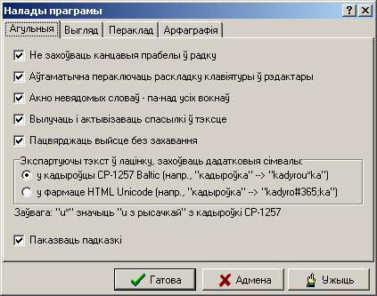
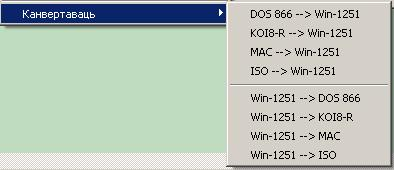
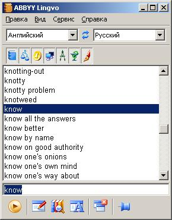
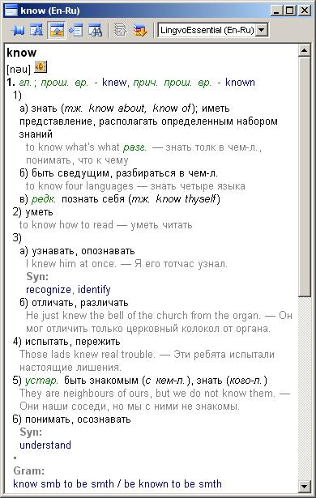
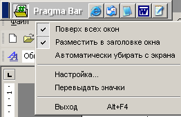

Люди в современном мире начинают все больше общаться, в том числе благодаря Интернету. Между ними все чаще и чаще встает языковой барьер. Поэтому я решил рассказать о программах, помогающих общаться. В будущем планируется целый цикл статей, посвященных этой теме.
Русско-белорусский переводчик Белазар стал настоящим спасением даже для тех, кто неплохо знает белорусский язык, так как затруднения при переводе могут возникнуть у каждого.
При первом запуске программа выдала ошибку - Белазар не обнаружил файл словаря. Оказалось, что словари нужно устанавливать отдельно. После установки словаря Белазар запустился нормально.
По умолчанию интерфейс программы на белорусском языке. Если вас это пугает, язык можно поменять на русский. Окно программы выглядит так:
В базе содержится 19715 белорусских слов и словосочетаний и 21341 русских (не так уж и мало, если учесть, что белорусский язык отличается от русского не сильно). Имеется возможность добавления новых слов.
Доступны следующие настройки:

Мне, например, очень понравилась функция автоматического переключения раскладки клавиатуры на белорусскую или русскую.
В программе реализована функция проверки правописания, которая показывает, какие слова в тексте написаны неправильно. Но пункт меню "Исправить" почему-то не работает. Кроме того, имеется возможность конвертирования текста из одной кодировки в другую:

Для тестирования перевода я взял следующее предложение "Не хочешь ли чая, который я купил позавчера?". Сложность в том, что белорусский аналог частицы "ли" ("цi") должен ставиться в начале предложения. Программа выдала следующее: "Ці не жадаеш гарбаты, які я набыў заўчора?". Как видите, есть одна небольшая ошибка. В белорусском языке слово "гарбата" женского рода, а слово "чай" в русском - мужского. И поэтому слово "якi" в переводе оказалось тоже мужского рода. Мелочь, конечно, но неприятно. Зато со словом "цi" программа справилась отлично. А вот при переводе с белорусского языка на русский проблем больше. Я взял то же самое выражение на белорусском языке. После перевода Белазар выдал такой текст: "Не алкаешь ли чая, какой я приобрел позавчера?". Конечно, глагол "алкать" подходит по смыслу, но более распространенный все-таки "хотеть".
В общем, несмотря на некоторые недоработки, программа неплохая.
Оценки:
| Удобство: | 8/10 |
| Качество перевода: | 6/10 |
| Официальный сайт: | http://belazar.belinter.net/ |
Эта не переводчик, а словарь, но какой словарь! В настоящий момент, насколько мне известно, программа имеет английский, немецкий, французский, итальянский и испанский словари. У меня в руках оказались английский и немецкий. Кроме словарей общей лексики, имеются и специализированные. Например, англо-русские: юридический, экономический, компьютерный, политехнический, медицинский и грамматический.
У Lingvo хороший и интуитивно понятный интерфейс. Нет ничего лишнего:

После нажатия на кнопку "Перевести" появляется такое окошко:

Здесь можно увидеть все варианты перевода слова или словосочетания, примеры его использования, синонимы. Если слово широко используемое, то рядом с транскрипцией появляется кнопка, с помощью которой можно его услышать. Качество произношения на очень высоком уровне. Если нужного слова Вы не нашли, словарь можно легко пополнить. Для этого нужно зайти в меню Сервис->Создать/Редактировать карточку... и указать там возможные варианты перевода. Можно отредактировать уже существующую карточку или создать свой собственный словарь.
С помощью сочетаний клавиш Ctrl+C+C или Ctrl+Ins+Ins можно переводить слова из других приложений, например, приложений MS Office и некоторых интернет-браузеров. Кстати, у программы есть онлайн-версия (http://www.lingvo.yandex.ru), которая ничуть не уступает самой программе.
Lingvo просто незаменима для тех, кто не любит пользоваться бумажным словарем. Недостатков, на мой взгляд, не имеет. Поэтому такая высокая оценка.
| Удобство: | 10/10 |
| Качество перевода: | - |
| Официальный сайт: | http://www.lingvo.ru/ |
Promt - один из самых популярных пакетов программ для перевода. Направлений перевода достаточно много: английский<->русский, немецкий<->русский, французский<->русский, испанский->русский и итальянский->русский. В пакет входит несколько программ, но для тестирования я взял только PromtX, отличающуюся простотой интерфейса.
При первой загрузке я увидел следующее:
Окно программы разделено на две части. В верхней части вводится то, что нужно перевести, а в нижней после нажатия на кнопку появляется перевод. Имеются тематические словари, их не так много, как в Lingvo, но мне вполне хватает. Реализована хорошая функция "Синхронный перевод": текст переводится сразу во время ввода. Любое слово можно услышать, но нормального произношения не получится, так как используются установленные на Вашем компьютере голосовые движки. Для тестирования перевода я взял все то же предложение "Не хочешь ли чая, который я купил позавчера?". Результат был такой: "Whether you want some tea which I have bought the day before yesterday?". Откуда здесь взялось Past Perfect, не говоря уже о множестве других ошибок? А вот с англо-русским переводом дела получше. Я взял более верный, на мой взгляд, вариант перевода: "Would you like the tea I bought the day before yesterday?". Программа выдала следующее: "Хотели бы Вы чай, который я купил позавчера?". И крайне не порадовала скорость перевода, даже одно предложение всего из нескольких слов переводится пару секунд.
Сама программа неплоха, хотя и имеет некоторые недостатки. Но из-за плохого русско-английского перевода ставлю только семерку. Кстати, недавно вышла версия 7.0. Судя по отзывам, в ней многое исправлено.
Оценки:
| Удобство: | 7/10 |
| Качество перевода: | 6/10 |
| Официальный сайт: | http://www.promt.ru/ |
8,67 Мб (дополнительные словари 5.44 Мб)
Лицензия: 15-дневный демонстрационный период для ознакомления с возможностями программы. В течение этого срока может быть установлена любая конфигурация системы Pragma.
Pragma 3.0 представляет собой модульную систему как относительно лингвистики, так и функционирования. Лингвистическая часть представлена языковыми модулями: английским, русским, немецким, украинским и другими, а также расширенным словарем спецтерминов. Имеются вспомогательные модули корректировки словарей и обновления системы через Интернет или локальную сеть.
Pragma 3.0 представлена линейкой продуктов: Pragma Base; Pragma Lite; Pragma Internet; Pragma Office; Pragma Expert; Pragma Net.
В отличие от других программ-переводчиков, Pragma ориентируется не на точность, а на скорость перевода и простоту использования. Она встраивается во многие приложения Windows (MS Word, IExplorer, Outlook, WordPad, Notepad) и переводит нужный текст с помощью одного щелчка мыши.
После инсталляции запускаются два модуля: Pragma monitor (сидит в трее) и Pragma Bar (плавающая панель).

На панели Pragma Bar находятся пиктограммы тех приложений, в которые программа может быть встроена. Это нововведение предназначено для облегчения запуска приложений, оно выполняет функции дополнительной панели быстрого запуска. Щелкнув по пиктограмме, Вы запустите соответствующее приложение.Pragma monitor выполняет функции быстрого перевода. Чтобы перевести текст, нужно выделить его и кликнуть в трее по значку Pragma. Сразу появятся два окна. В верхнем, если необходимо, можно выбрать язык перевода и базу словаря (присутствует более ста различных тематик). После нажатия на кнопку ОК текст будет переведен, а результат появится в нижнем окне. Там же имеются кнопки: "Перевод" - если надо перевести текст на другой язык, "Копировать" - для копирования результата в буфер обмена, "Параметры" - для настройки параметров по умолчанию, "Закрыть" - для закрытия окна. Не нужно спешить воспользоваться последней кнопкой, если не закрывать окно, мы сможем оценить
еще одно удобство. Окно имеет свойство "Поверх всех", поэтому любой скопированный в буфер текст автоматически будет переведен, теперь не надо ничего нажимать.
Во все программы, в которые встраивается Pragma, добавляется меню из трех пунктов: "Перевод" (дублируется значком в панели инструментов), "Настройка" и "О программе". Если использовать это меню, то после перевода Pragma спросит о способе сохранения результата и предложит несколько вариантов:
В программе присутствует модуль корректировки словарей, можно создавать свои базы любой тематики и редактировать имеющиеся.
Вот и все, что касается функциональности. Все очень просто и легко, разработчики молодцы. Это самая удобная программа среди тех, с которыми мне приходилось работать.
Теперь перейдем к тестам. Я взял все то же предложение "Не хочешь ли чая, который я купил позавчера?". Результат был такой: "Do not you want tea which I purchased the day before yesterday?". Для обратного перевода я взял более правильный, на мой взгляд, вариант: "Would you like the tea I bought the day before yesterday?". Программа выдала: "Разве вы хотели бы чай, я купил позавчера?". Как видите, качество оставляет желать лучшего.
Оценки:
| Удобство: | 10/10 |
| Качество перевода: | 5/10 |
| Официальный сайт: | http://www.trident.com.ua/ |
{kind=link}
{kind=link}
{kind=link}
{kind=link}